|
Оборудование
Роботы состоят из нескольких частей: корпуса, шасси,
оружия и модуля. Корпус и шасси - обязательные
части, которые присутствуют в любом роботе, а оружие и модули можно добавлять
по желанию.
Корпуса
Количество активных слотов под оружие зависит от корпуса.
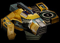 |
Моностек
Один слот под основной тип оружия.
Броня: Легкая. |
 |
Бирекс
Один слот под основной тип оружия и один под дополнительный тип оружия.
Броня: Легкая. |
 |
Диплоид
Два слота под основной тип оружия.
Броня: Средняя. |
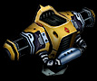 |
Парагон
Два слота под основной тип оружия и один под дополнительный тип оружия.
Броня: Средняя. |
 |
Трайдент
Три слота под основной тип оружия.
Броня: Тяжелая. |
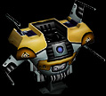 |
Фулстек
Все возможные типы оружия.
Броня: Тяжелая. |
Шасси
На скоростные характеристики робота влияют шасси.
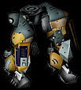 |
Пневматика
Шагающий механизм пневматического принципа действия, с виду напоминает ноги гуманоида.
Проходит по любой поверхности, кроме глубоководных мест.
|
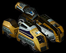 |
Колеса
Бронированные колеса. Представляет собой три пары широких колес с глубоким протектором.
Проходят по любой поверхности, кроме глубоководных мест.
|
 |
Траки
Самый медленный вид шасси с гусеничным принципом действия. Оснащается дополнительной
ультратитановой броней.
|
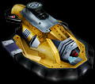 |
Экроплан
Сочетают в себе максимальную проходимость и хорошую скорость. Использует принцип
нагнетания воздуха под корпус – «воздушной подушки».
|
 |
Антигравы
В области антигравитации доминаторы добились больших успехов. Изобретенный ими
вид шасси дает роботу максимально возможную скорость и проходимость. |
Модули
Дополнительные возможности реализуются в роботе с помощью модулей.
|
|
Блокиратор
Используя гранулярный принцип диффузии металлов, покрывает поверхность корпуса
дополнительным слоем брони, увеличивая его прочность на 30 единиц.
|
|
|
Динамо
По сути - является гиниромасленным насосом. Прокачивает масло по всем узлам машины,
смазывая их и значительно увеличивая отвод тепла, что уменьшает перегрев оружия
на 20%, увеличивает его скорострельность на 20% и скорость шасси на 20%.
|
|
|
Локатор
Усиливает локационные возможности робота и снижает помехи. Увеличивает дальность
стрельбы на 20% и радиус действия радара - на 50%.
|
|
|
Фаервол
Излучает направленные помехи и тем самым сбивает электронные блоки наведения на
цель - уменьшает количество попаданий на 50%. Блокирует действия разрядника, повреждение
от оружия "Ликвидатор" на 30% меньше.
|
Оружие
В планетарных битвах существует два типа орудий:
1. Восемь видов основных орудий - те, что устанавливаются
в передние пазы для орудий.
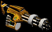 |
Пулемет
Скорострельное оружие. Стреляет 20-ти миллиметровыми снарядами. Значительная часть
современной брони достаточно эффективна против этого оружия. |
 |
Пушка
Оружие средней мощности. Производит выстрелы снарядами с плазменными боеголовками.
При попадании в цель плазменный заряд прожигает броню. |
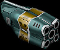 |
Ракетница
Удачное сочетание цены и качества. Долго перезаряжается, но пробивает любые виды
брони. Представляет серьезную угрозу при совмещении нескольких ракетниц в одной
боевой единице. |
 |
Огнемет
Термическое оружие - выбрасывает мощную струю пламени. Очень малый радиус действия,
но воспламененная цель будет гореть длительное время, пока не выгорит горючая
жидкость. |
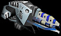 |
Лазер
Поражает цель мощным тепловым лучом, прожигая и даже расплавляя броню. Сильно
нагревается во время стрельбы и долго остывает. |
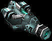 |
Плазмоган
Стреляет сгустками плазмы с высокой скоростью. За счет внешнего образования плазмы
очень незначительно нагревается. Дальность стрельбы оптимальная. |
 |
Разрядник
Генерирует направленный электромагнитный импульс, подавляя управляющие сигналы
движущей системы. Позволяет полностью обездвижить противника. |
 |
Ремонтник
Скорее, не орудие, а ремонтное оборудование. Это устройство выброса наноботов,
восстанавливающих поврежденные части роботов. Обычно интегрируется на роботе без
других видов оружия. |
2. Два вида дополнительных орудий - те, что устанавливаются
в заплечный отсек для орудий.
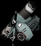 |
Миномет
Мощное оружие. Длительная перезарядка, но при точном попадании наносит большие
повреждения. |
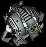 |
Атомная бомба
Мощное средство уничтожения - уничтожает и носителя, и все, что находится вокруг
него. Используется быстроходными роботами-камикадзе или в крайних случаях. |
|